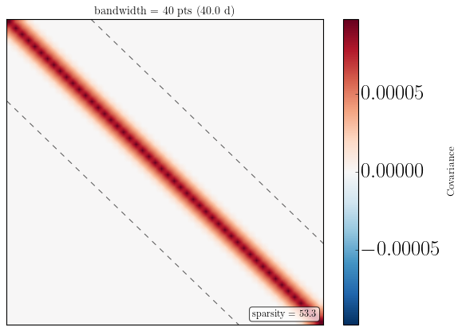
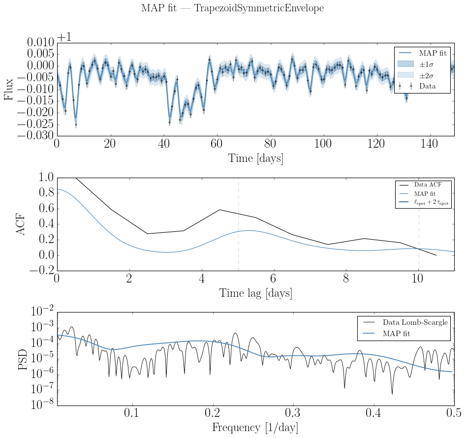

GPSolver and Hyperparameter Optimization#
This notebook fits GP hyperparameters to a simulated stellar lightcurve using GPSolver. It continues from trapezoid_symmetric_tutorial.ipynb, which builds the model and generates the lightcurve.
Set up the model and simulate a lightcurve (quick recap)
Warm up JAX with
build_jax()forAnalyticKernelandGPSolverSingle-start MAP fit with
fit_map()Multi-start MAP to avoid local minima
[1]:
import sys
sys.path.append("../..")
import time
import numpy as np
import matplotlib.pyplot as plt
from src_jax import (
TrapezoidSymmetricEnvelope,
VisibilityFunction,
SpotEvolutionModel,
LightcurveModel,
AnalyticKernel,
GPSolver,
)
np.random.seed(42)
1. Model setup and lightcurve simulation#
Reproduce the SpotEvolutionModel and synthetic lightcurve from the envelope tutorial.
[2]:
envelope = TrapezoidSymmetricEnvelope(lspot=14.0, tau_spot=6.0)
visibility = VisibilityFunction(peq=4.0, kappa=0.3, inc=np.pi / 3)
model = SpotEvolutionModel(envelope=envelope, visibility=visibility, sigma_k=0.01)
print("param_keys:", model.param_keys)
param_keys: ('peq', 'kappa', 'inc', 'lspot', 'tau_spot', 'sigma_k')
[3]:
lc = LightcurveModel.from_spot_model(
spot_model=model,
nspot=30,
tsim=150,
tsamp=1.0,
lat=[-np.pi / 2, np.pi / 2],
long=[0, 2 * np.pi],
)
sigma_n = 0.3 * np.std(lc.flux)
flux_obs = lc.flux + np.random.normal(0, sigma_n, lc.flux.shape)
flux_err = np.full_like(flux_obs, sigma_n)
tobs = lc.t
print(f"Lightcurve: {len(tobs)} points, sigma_n = {sigma_n:.5f}")
Lightcurve: 150 points, sigma_n = 0.00164
2. Warm up JAX with build_jax()#
Call build_jax() on both AnalyticKernel and GPSolver before any timed operations. This pays the XLA compilation cost upfront so subsequent calls reflect true runtime.
Class |
What gets compiled |
|---|---|
|
|
|
|
[5]:
ak = AnalyticKernel(model).build_jax()
JAX kernel compiled in 3.57s
JAX kernel recompute in 0.24s
3. GP hyperparameter fit — MAP solution#
Construct a GPSolver from the SpotEvolutionModel, define bounds, call build_jax() to compile all four JIT functions, then run fit_map().
[4]:
bounds = {
"peq": (5.0, 10.0),
"kappa": (-0.5, 0.8),
"inc": (0.1, np.pi / 2),
"lspot": (2.0, 20.0),
"tau_spot": (0.5, 10.0),
"log_sigma_k": (-4.0, 0.0), # sample sigma_k in log10 space
}
# Pass the SpotEvolutionModel directly — GPSolver reads param_keys from it
gp = GPSolver(tobs, flux_obs, flux_err, model, bounds=bounds)
print("param_keys:", gp.param_keys)
print("n_params :", gp.n_params)
print("bandwidth :", gp.bandwidth)
Banded Cholesky: bandwidth=40, N=150, sparsity=72.7%
param_keys: ('peq', 'kappa', 'inc', 'lspot', 'tau_spot', 'log_sigma_k')
n_params : 6
bandwidth : 40
We can also check what the structure of the covariance matrix by plotting it. This function can be slow to plot large matrices, so we will bin down the matrix to a nbin by nbin grid. Note: the sparsity bandwidth is set by the upper limit of lspot and tau_spot from the bounds.
[5]:
gp.plot_covariance_matrix(show=True, nbins=50)

[5]:
<Axes: title={'center': 'bandwidth = 40 pts (40.0 d)'}>
[6]:
# Compile all four JIT functions (log_posterior, neg_log_posterior,
# grad_log_posterior, grad_neg_log_posterior) before timing any fits.
#
# Without build_jax(), the first call to fit_map() would silently
# include several seconds of XLA compilation time.
gp = gp.build_jax()
JAX GP solver compiled in 3.67s
JAX GP solver recompute in 0.07s
[7]:
t0 = time.time()
theta_map, opt_result = gp.fit_map(method="nelder-mead")
print(f"fit_map() wall time: {time.time() - t0:.2f} s "
f"(converged: {opt_result.success})")
# True values for comparison
theta_true = {
"peq": model.peq,
"kappa": model.kappa,
"inc": model.inc,
"lspot": model.lspot,
"tau_spot": model.tau_spot,
"sigma_k": model.sigma_k,
}
print(f"\n{'param':>12s} {'true':>10s} {'MAP':>10s}")
print("-" * 38)
for k, v_true in theta_true.items():
v_map = theta_map.get(k, theta_map.get("log_" + k, float("nan")))
print(f"{k:>12s} {v_true:10.4f} {v_map:10.4f}")
fit_map() wall time: 29.37 s (converged: False)
param true MAP
--------------------------------------
peq 4.0000 5.0054
kappa 0.3000 0.7769
inc 1.0472 1.5505
lspot 8.0000 11.7706
tau_spot 3.0000 0.5528
sigma_k 0.0100 -2.3722
[11]:
tlag_plot = np.arange(0, 3 * model.peq, lc.tsamp)
fig, axes = plt.subplots(3, 1, figsize=(12, 11))
gp.plot_prediction(theta=theta_map, ax=axes[0],
model_color="steelblue", model_label="MAP fit")
gp.plot_acf(theta=theta_map, ax=axes[1], tlags=tlag_plot,
model_color="steelblue", model_label="MAP fit",
normalize=True)
# Mark rotation period and envelope support
t_env = theta_map["lspot"] + 2 * theta_map["tau_spot"]
for n in range(int(t_env / theta_map["peq"]) + 1):
axes[1].axvline(n * theta_map["peq"], color="steelblue", alpha=0.3, lw=1, ls="--")
axes[1].axvline(t_env, color="steelblue", lw=2,
label=r"$\ell_{\rm spot} + 2\,\tau_{\rm spot}$")
axes[1].legend(fontsize=11)
gp.plot_psd(theta=theta_map, ax=axes[2],
model_color="steelblue", model_label="MAP fit")
fig.suptitle("MAP fit — TrapezoidSymmetricEnvelope", fontsize=20, y=1.01)
fig.tight_layout()
plt.show()

4. Multi-start MAP (optional)#
MAP optimization can land in local minima. Run several trials from random starting points and keep the best. fit_map(nopt=N) handles this automatically — compile once with ``build_jax()`` first.
[12]:
t0 = time.time()
theta_best, opt_best = gp.fit_map(nopt=5, method="nelder-mead")
print(f"5-start fit_map() wall time: {time.time() - t0:.2f} s")
print(f"\n{'param':>12s} {'true':>10s} {'MAP (best)':>12s}")
print("-" * 42)
for k, v_true in theta_true.items():
v_map = theta_best.get(k, theta_best.get("log_" + k, float("nan")))
print(f"{k:>12s} {v_true:10.4f} {v_map:12.4f}")
5-start fit_map() wall time: 151.89 s
param true MAP (best)
------------------------------------------
peq 4.0000 5.0195
kappa 0.3000 -0.3981
inc 1.0472 1.1160
lspot 8.0000 9.0598
tau_spot 3.0000 0.5302
sigma_k 0.0100 -2.4003
[ ]: